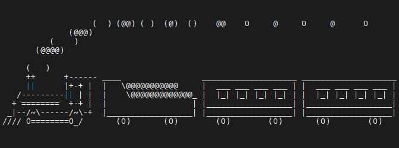

Woche 1
GUI Desktop Tastenkombinationen
Strg + C
Strg + D
Strg + Shift + C in das Clipboard kopieren
Strg + Shift + V aus dem Clipboard einfügen
Strg + L Bildschirm leeren
Strg + Alt/Shift + T Terminalfenster öffnen (Alt oder Shift sollte funktionieren)
Tab automatische Vervollständigung
Pfeiltasten oben/unten zuletzt benutze Befehle
man <befehl> öffnet das Manual für den entsprechenden Befehl
Beispiel für eine Package Installation
Das Programm sl (steam locomotive - Dampflokomotive) wird folgendermaßen installiert.
Ruft man dann sl auf
sieht man eine Lokomotive über den Bildschirm fahren:

Hinweis: in der Regel ist das Verzeichnis /usr/games nicht im Suchpfad der Shell. Will man nur den Programmnamen ohne Pfad beim Aufruf angeben, gibt es zwei Möglichkeiten:
Den Suchpfad der Shell erweitern:
PATH=$PATH:/usr/games
Ein alias für das Programm anlegen
alias sl='/usr/games/sl'
Debian Paktetverwaltung
Weiß man nicht genau, in welchem Debian Paket ein Programm enthalten ist, kann man das Pakte mit Hilfe der Debian-Paketsuche
Warum gibt es die Einträge . und .. in einem Verzeichnis?
In jedem Verzeichnis gibt es die beiden Einträge . und .. :
. verweist auf das aktuelle Verzeichnis
cd . : es ändert sich nicht, ich befinde mich immer
noch im gleichen Verzeichnis
.. verweist auf das übergeordnete Verzeichnis (parent directory)
cd .. : ich wechsele in das übergeordnete Verzeichnis
Verzeichniseintrag ..
Angenommen ich befinde mich derzeit im Verzeichnis /home/openhpi/linux_cli und gebe dort die folgenden Kommandos ein ($ ist das Prompt (Eingabeaufforderung) der Shell. Die Zeichen nach dem $ sind die Eingaben, die Zeilen ohne $ am Anfang sind die Ausgaben)
$ pwd
/home/openhpi/linux_cli
$ find week1-dir -type d -print
week1-dir
week1-dir/dir3
week1-dir/dir2
week1-dir/dir2/.hidden
week1-dir/dir1
$ cd week1-dir/dir1
$ pwd
/home/openhpi/linux_cli/week1-dir/dir1
Jetzt möchte ich in das Verzeichnis /home/openhpi/linux_cli/week1-dir. Die folgenden cd Kommandos kann man dazu nicht verwenden.
$ cd - : wechsele zurück in das letzte Verzeichnis (_/home/openhpi/linux_cli_)
$ cd : wechsele in das Homeverzeichnis der Kennung (_/home/openhpi_)
D.h. ich muss das folgende eingeben:
Mit Hilfe des Verzeichniseintrags .. kann ich aber kurz schreiben
Vorteil: erstens ist diese Schreibweise kürzer - aber viel wichtiger: ich brauche dabei den Namen des Verzeichnisses, in das ich wechseln will, nicht kennen.
Kuriose Ausnahme
Das Rootverzeichnis / eines Dateisystems enthält auch die Einträge . und .. In diesem Fall verweisen sowohl . als auch .. auf /
Verzeichniseintrag .
Der nutzen von .. sollte einigermaßen klar sein.
Frage: warum braucht man den Eintrag . ?
Beispiel: in meinem aktuellen Verzeichnis gibt es die ausführbare Datei hallo, die beider Ausführung Hallo ausgibt.
Wenn ich den Namen einfach als Kommando in die Shell eingebe, passiert das Folgende:
Warum ist das so?
Die Shell interpretiert hallo als auszuführendes Kommando. Das es kein in die Shell
eingebautes Kommando ist, muss sie wissen, wo im Dateisystem die Datei zu finden
ist. Dazu benutzt die Shell die Variable PATH
Hier kann man mehrere durch : getrennte Verzeichnisse angeben. Im obigen Beispiel würde die Shell in der folgenden Reihenfolge nach der Datei hallo suchen:
- /usr/local/bin/hallo
- /usr/bin/hallo
- /bin/hallo
Dabei gilt: der erste Treffer wird ausgeführt. Man kann natürlich das akutelle Verzeichnis, in dem man sich befindet, zur Variabeln PATH hinzufügen:
Aber das ist natürlich nicht immer sinnvoll.Will man wissen, wo im Pfad ($PATH) das Kommando gefunden wurde, kann man das Kommando type nutzen:
Nächster Versuch:
Sieht gut aus, es kann aber auch das Folgende passieren:
Warum?
Beim Aufruf
erwartet die Bash, das die Datei hallo ein Bash Skript enthält.
Von welchem Typ meine ausführbare Datei ist (Shell Skript oder Programm), sieht man mit dem folgenden Kommando:
$ file hallo
hallo: ELF 64-bit LSB pie executable, x86-64, version 1 (SYSV), dynamically linked, interpreter /lib64/ld-linux-x86-64.so.2, BuildID[sha1]=1dc10461ed0684ca195d2712ba9a0205d2989543, for GNU/Linux 3.2.0, not stripped
Ohne den Typ zu kennen, müsste man das Skript/Programm folgendermaßen aufrufen:
Mit Hilfe des builtin Kommandos pwd in der Shell geht das auch so:
Da . auf das aktuelle Verzeichnis verweist, kann man aber auch einfach das Folgende aufrufen:
Sollen immer alle ausführbaren Dateien im aktuellen Verzeichnis von der Shell gefunden werden, kann man die Variable PATH folgendermaßen erweitern:
Bleibt noch die Frage, warum
als Bash Skript ausgeführt wird.
Lösung: die Datei Datei sieht folgendermaßen aus:
Wichtig ist hierbei die erste Zeile:
Diese Zeile wird als Shebang bezeichnet.
Die Shell nimmt in diesem Fall an, dass die Zeichenkette nach "#!" ein Kommando ist. Die Shell ruft dieses Kommando auf und übergibt den Rest der Datei an das Kommando.
Weitere Informationen
Daten für die Praktische Übung 1.9
Die Daten für die Praktische Übung 1.9 habe ich hier abgelegt:
- week1-dir/
Ausgepacktes Archiv - week1-dir.tar.gz
TAR Datei der Daten - week1-dir.zip
Die original ZIP Datei
Auspacken der TAR Datei:
finden.Zusammenfassung der Woche 1
Linux verwendet, ähnlich wie Windows, ein Dateisystem mit Verzeichnissen und Dateien.
Loggt man sich and der Console ein, oder öffnet in einer GUI ein Terminalfenster befindet man sich im sogenannten Homeverzeichnis der Kennung. Das Verzeichnis, in dem man sich gerade befindet, kann man sich mit dem Kommando pwd ansehen:
Mit dem Kommando cd kann man das Verzeichnis wechseln.
Es gibt 3 spezielle Möglichkeiten, das Kommando cd zu nutzen:
cd : wechsel in das Homeverzeichnis
cd ~ : wechsel in das Homeverzeichnis
cd - : wechsel in das letzte Verzeichnis
Beispiel:
$ pwd
/home/openhpi
$ cd linux_cli
$ pwd
/home/openhpi/linux_cli
$ cd
$ pwd
/home/openhpi
$ cd linux_cli
$ pwd
/home/openhpi/linux_cli
$ cd ~
$ pwd
/home/openhpi
$ cd linux_cli
$ pwd
/home/openhpi/linux_cli
$ cd week1-dir
$ pwd
/home/openhpi/linux_cli/week1-dir
$ cd -
/home/openhpi/linux_cli
$ pwd
/home/openhpi/linux_cli
Die in einem Verzeichns vorhandenen Verzeichnisse/Dateien kann man sich mit dem Kommando ls ansehen.
In Linux gibt es eine Reihe von Rechte im Dateisystem. Diese Rechte kann man mit dem Kommando chmod verändern.
Zur Installation von Programmen benötigt man eine Administratorberechtigung. In einer Desktop Linux Umgebung ist in der Regle mindestens ein Benutzer so konfiguriert, dass er das Programm sudo aufrufen kann. Dieser Benutzer kann das Software auf dem Rechner installieren.
Beispiel: